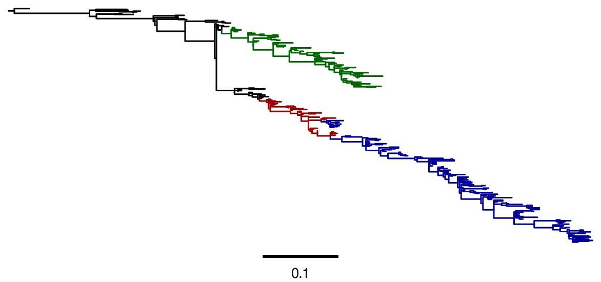

2013 analysis of human influenza NPs descended from 1918 virus¶
Overview¶
This is a description of an analysis of the effectiveness of experimentally determined substitution models for describing the evolution of influenza nucleoprotein (NP).
This analysis was performed by Jesse Bloom.
The overall approach is to use the phyloExpCM package to analyze a NP phylogeny using an experimentally derived substitution model from a mapmuts analysis of the Aichi68 influenza NP from 2013, and to compare this model to various standard codon substitution models.
Much of the analysis itself is performed using HYPHY, which is run by phyloExpCM using the scripts detailed in the phyloExpCM documentation.
The phylogenetic tree that is analyzed consists of human influenza lineages with their NPs directly descended from the 1918 virus, specifically:
- H1N1 from 1918 to 1957, and again from 1977 to 2008 (seasonal H1N1).
- H2N2 from 1957 to 1968.
- H3N2 from 1968 to 2013.
The code, data, and results from the analysis are in the ./examples/2013Analysis_Influenza_NP_Human_1918_Descended/ subdirectory in the main phyloExpCM package directory. This subdirectory contains all of the necessary input files (see Input files) for running the analysis. It also contains a master script (run_analysis.py) that can be used to regenerate the analysis with the command:
python run_analysis.py
provided that you have installed the software described in Software used.
Software used¶
The analysis was performed using the following software on the Fred Hutchinson computer cluster using the following Linux distribution:
Linux version 3.5.0-43-generic (buildd@roseapple) (gcc version 4.6.3 (Ubuntu/Linaro 4.6.3-1ubuntu5) ) #66~precise1-Ubuntu SMP Thu Oct 24 14:52:23 UTC 2013
In order to replicate the analysis, you will need to use Linux or Mac OS X, and install the software listed below.
The specific versions of software used are specified. Other versions will likely work as well, but this has not been confirmed.
Python (version 2.7.3)
phyloExpCM (version 0.21).
numpy (version 1.6.1)
matplotlib (version 1.3.1).
mapmuts (version 1.0)
EMBOSS needle (version 6.6.0). The executable with the name needle is expected to be in the current search path.
RAxML (version 7.7.6). The executable with the name raxmlHPC-SSE3 is expected to be in the current search path. This is the SSE3 version, and was built using the command:
make -f Makefile.SSE3.gcc
and then copying the executable into the search path.
Path-O-Gen (version 1.4) was used for the visual identification of outliers from the molecular clock and to root trees based on date-stamping.
FigTree (version 1.4.0) was used to open tree files for annotation, visualization, and saving of images.
codonPhyML (version 1.00 201306.18) was used to build phylogenetic trees. The executable with the name codonphyml is expected to be in the current search path. This executable was compiled with the omp options to make it multi-threaded.
HYPHY (version HYPHY 2.220131214beta(MP) for Linux on x86_64) was used to optimize the branches and compute the likelihoods under the different models. The multiprocessor (HYPHYMP) version of the executable was used. To install this, the following commands were run in the unzipped HYPHY source code directory after download:
cmake -DINSTALL_PREFIX=/home/jbloom/.local/ . make MP2 make install
This analysis was run on the FHCRC scientific computing cluster using sbatch (version 2.6.2), and requires sbatch to be installed to run as currently implemented. If you don’t want to use sbatch, all you need to do is modify the main run_analysis.py script to not submit any jobs via sbatch. The use of sbatch in the current version simply allows more processors to be used simultaneously and so speeds up the analysis.
ImageMagick convert 6.6.9-7 2012-08-17 was used to convert PDF files to JPGs.
Input files¶
Here are the input files that are necessary to repeat the analysis. These are the names assigned with the ./examples/2013Analysis_Influenza_NP_Human_1918_Descended/ subdirectory of the main phyloExpCM package.
run_analysis.py is a Python script that will perform the analysis assuming that you have all of the appropriate software (see Software used) and input files. To run this script, use:
python run_analysis.py
at the command line.
NPseqs.fasta is the set of all unique full-length influenza A coding DNA sequences as downloaded from the Influenza Virus Resource on June-25-2013.
Aichi68-NP.fasta is the coding DNA sequence for A/Aichi/2/1968 (H3N2) NP as taken from reverse-genetics plasmid pHWAichi68-NP.
JVI_82_8947_Anomalies.txt is a list of the strain names for the sequences identified as anomalous (either frozen in time or recombinant) in Appendices 1 and 2 of Krasnitz et al, 2008.
JDB_Anomalies.txt is a list of strain names that appear to be anomalous based on their strong violation of the molecular clock. These sequences are probably mis-annotated in the database, come from non-standard lineages (for examples a swine H3N2 isolated from humans), are reassortants (example would be an H1N1 NP that reassorted into an H3N2), or are extensively lab adapted and so deviate from the molecular clock due to large numbers ofadaptation mutations.
mutspectrum.txt is a file that contains the experimentally measured nucleotide mutation rates.
Files giving the inferred equilibrium amino-acid preferences at each site in NP. These files are from the mapmuts analysis of the Aichi68 influenza NP from 2013. These files are in the format of the *_equilibriumpreferences.txt files created by mapmuts_inferpreferences.py as described in the mapmuts documentation. There are three such files included here:
- replicate_A_p1_equilibriumpreferences.txt gives the preferences inferred from passage 1 (p1) from replicate A.
- replicate_B_p1_equilibriumpreferences.txt gives the preferences inferred from passage 1 (p1) from replicate B.
- p1_equilibriumpreferences.txt gives the average of the preferences from the two replicates above (replicate A and replicate B, both p1).
./DSSP_analysis/ is a subdirectory that contains the results of analyzing the solvent accessibilities and secondary structures of NP from the crystal structure. Briefly, the NP crystal structure in PDB 2IQH was downloaded, and the 2IQH.pdb file was manually edited to extract only monomer C into 2IQH_monomerC.pdb. This monomer was then analyzed with the DSSP webserver to create the results stored in 2IQH_monomerC.dssp.
Running the analysis¶
The analysis in this directory can be repeated simply by running the master script run_analysis.py from the command line with:
python run_analysis.py
or running it using sbatch with:
sbatch run_analysis.sbatch
Other than the files delineated under Input files, all data files in this directory can be re-generated with this command. However, the analysis approach does involve a few manual steps with Path-O-Gen and FigTree to create nicely formatted and annotated tree images from the raw tree files produced by the script. These manual steps are indicated below.
There is a variable called use_existing_output that is hardcoded into the beginning of this script. This variable is currently set to True, which means that if output already exists it is not overwritten and regenerated. If you want to regenerate the output (such as after changing input files or altering analysis parameters), then either manually delete the old output or change use_existing_output to False to force the script to overwrite old output. This script does not automatically test for dependencies among files, so if you change a file but keep use_existing_output to True, then you need to manually remove any old files with dependencies.
Note that run_analysis.py uses multiple CPUs to speed up some of the analyses. If you don’t have as many CPUs on your system, you might want to check that you are not overloading the system – you can avoid this by using fewer CPUs, which will require you to manually modify the run_analysis.py script.
Note that run_analysis.py uses sbatch by default to run some of its subsidiary programs – if you don’t want to do this, set the use_sbatch option to False within the program.
Steps in the analysis¶
Here are the steps in the analysis. The command for each step is shown, but these commands (with the exception of some manual formatting of tree images with Path-O-Gen and FigTree) are run automatically by the main run_analysis.py script if you are using that.
Creation of sequence alignments¶
Extract and align the human NP sequences descended from the 1918 virus into Aligned_NPs.fasta. This is done by the script get_treeseqs.py, by running:
python get_treeseqs.py
The created Aligned_NPs.fasta includes the sequences with headers that give their isolation date (except for H1N1 from after 1977, where 24 years are subtracted from the isolation date for the reasons described below).
The specific steps are as follows:
Read all sequences from NPseqs.fasta.
Purge any sequences specified as anomalous in JVI_82_8947_Anomalies.txt and JDB_Anomalies.txt.
Purge any sequences with ambiguous nucleotide identities.
If there are redundant identical sequences, keep only one sequence from each set of identical sequences.
Purge any sequences for which the host, year of isolation, or subtype is unavailable.
Purge any sequences for which the host is something other than human.
Keep at most 3 sequences per year from each of the following classifications. Sequences from other classifications are all removed. The classifications for which 3 per year are retained are:
- H1N1 from 1918 to 1957: this is H1N1 directly descended from the 1918 virus.
- H2N2 from 1957 to 1968: this H2N2 derived from reassortment of an avian virus with the existing H1N1 in the 1957 “Asian flu” pandemic. The NP in the new H2N2 was from the existing H1N1, which then went extinct.
- H3N2 from 1968 to 2013: this is H3N2 derived from reassortment of an avian virus with thte existing H2N2 in the 1968 “Hong Kong flu” pandemic. The NP in the new H3N2 was from the existing H2N2, when then went extinct.
- H1N1 from 1977 to 2008: this is “seasonal H1N1” that arose in 1977 in the “Russian flu” pandemic. This is a virus from the earlier human H1N1 that was frozen and re-released. The virus was frozen for about 24 years before this pandemic (estimate from dos Reis et al, 2009), and therefore 24 years are subtracted from the isolation date of viruses in this lineage. This date subtraction is not important for the construction of the phylogenetic tree, but it is important for the Path-O-Gen based analysis that assumes a molecular clock (see Check for outlier sequences).
Translate and align all of the protein sequences, then also construct nucleotide alignments from the protein alignments. The alignments are built with EMBOSS needle. The alignments are written to Aligned_NPs.fasta and Aligned_NP_proteins.fasta.
Check for outlier sequences¶
There are almost always clear “outlier” sequences in influenza phylogenies. These outliers can arise from several sources:
- Mis-annotation of the date or subtype in the database.
- Amplification of a lab contaminant during sequencing.
- Sequencing of a zoonotic rather than epidemic strain. For example, there are currently low rates of swine-origin vH3N2 in humans. These strains are also sequenced and labeld as human H3N2 (since they are H3N2 from humans) – but they are not from the same evolutionary lineage, as they have been evolving in swine.
To eliminate such outliers, several steps were taken. First, sequences that have already been identified as anomalous Krasnitz et al, 2008 are eliminated in Creation of sequence alignments described above.
However, to identify further outliers, the following steps were taken. Essentially, these steps utilize RAxML and Path-O-Gen to manually identify sequences that are clear outliers from the molecular clock. These sequences are then added to the file JDB_Anomalies, and the steps in Creation of sequence alignments and then those here are repeated. This iterative process has been completed for the sequences here until no more outliers were identified.
Specifically, the steps were:
The run_analysis.py script builds a RAxML tree for quick visual inspection. RAxML is used because it is a rapid method to build a reasonable maximum-likelihood tree. The steps:
The subdirectory ./RAxML_output/ was created
RAxML was run using the following command:
raxmlHPC-SSE3 -w ./RAxML_output -n Aligned_NPs -p 1 -m GTRCAT -s Aligned_NPs.fasta
Note that for the actual command, the full path needs to be specified for the RAxML_output subdirectory as RAxML does not handle relative paths – this is handled by the master script run_analysis.py.
The following command will have created the best RAxML tree as ./RAxML_output/RAxML_bestTree.Aligned_NPs.
The next step is manual. Open this tree using Path-O-Gen, and look manually to see if there are outliers from the molecular clock in the ./RAxML_output/RAxML_bestTree.Aligned_NPs file. If so, add these outliers to JDB_Anomalies.txt and repeat the Creation of sequence alignments and this RAxML analysis. Note that this has already been done, so if you are just re-running the analysis then you don’t need to do this unless you have changed the sequence set.
Construction of phylogenetic trees¶
High-quality phylogenetic trees were then constructed using codonPhyML, which is able to build maximum-likelihood trees with codon substitution models.
The phyloExpCM script phyloExpCM_runcodonPhyML.py (see phyloExpCM documentation for details) was used to run codonPhyML. Trees were built using two different substitution models, with each tree in its own subdirectory within ./examples/2013Analysis_Influenza_NP_Human_1918_Descended/. The substitution models used to build the trees:
The GY94 codon model (Goldman and Yang 1994) with:
- The equilibrium codon frequencies estimated emprically using the CF3x4 method.
- A single transition / transversion ratio (kappa) estimated by maximum likelihood.
- The dN/dS ratio (omega) drawn from four discrete gamma-distributed categories (Yang 1994) with the shape parameter and mean estimated by maximum likelihood.
The tree construction was performed in the ./GY94_codonPhyML_tree/ subdirectory. The tree itself is in the file ./GY94_codonPhyML_tree/codonphyml_tree.newick.
The KOSI07 empirical codon model (Kosiol et al, 2007), using the variant denoted as ECM+F+omega+1kappa(tv) in Kosiol et al, 2007. Specifically:
- The equilibrium codon frequencies were estimated empirically using the F method (empirical estimation of 60 frequencies for the 61 non-stop codons).
- The relative decrease in transversions versus transitions, kappa(tv), estimated by maximum likelihood.
- The relative elevation in nonsynonymous over synonymous mutations (omega) drawn from four gamma-distributed categories with shape parameter and mean estimated by maximum likelihood.
The tree construction was performed in the ./KOSI07_codonPhyML_tree/ subdirectory. The tree itself is in the file ./KOSI07_codonPhyML_tree/codonphyml_tree.newick.
To visualize these trees, the following manual steps were performed:
The codonphyml_tree.newick tree in each of the two subdirectories was opened with Path-O-Gen, the tree was re-rooted according to the dates assigned to the tips, and the re-rooted tree was saved with the name rooted_tree.trees.
The rooted_tree.trees file was opened in FigTree, adjusted for attractive visual display, and saved to the file annotated_tree.trees.
A PDF image of the tree in the annotated_tree.trees file was saved manually with FigTree, and then converted to a JPG with ImageMagick convert using the command:
convert -density 200 annotated_tree.pdf annotated_tree.jpgThe tree images created by these steps are shown below:
Image of the tree generated by codonPhyML for the GY94 substitution mdel (file ./GY94_codonPhyML_tree/annotated_tree.jpg). In this tree, H2N2 is colored in red, H3N2 is colored in blue, seasonal H1N1 from the 1977 pandemic is colored in green, and all earlier H1N1 is colored in black.
Image of the tree generated by codonPhyML for the KOSI07 substitution mdel (file ./KOSI07_codonPhyML_tree/annotated_tree.jpg). In this tree, H2N2 is colored in red, H3N2 is colored in blue, seasonal H1N1 from the 1977 pandemic is colored in green, and all earlier H1N1 is colored in black.
As can be seen from the above figures, the GY94 and KOSI07 substitution models yield extremely similar tree topologies. This is probably because the extremely dense sampling of the phylogeny makes it easy to place nodes.
{kind=link}
{kind=link}
Construction of experimental substitution models¶
Experimental codon substitution models usable by HYPHY were constructed from the equilibrium preferences inferred by the mapmuts analysis of the Aichi68 influenza NP from 2013. Recall that the Input files include the following three files giving experimentally inferred equilibrium preferences:
- replicate_A_p1_equilibriumpreferences.txt
- replicate_B_p1_equilibriumpreferences.txt
- p1_equilibriumpreferences.txt
as well as as the mutspectrum.txt file giving the experimentally measured nucleotide mutation frequencies.
The experimental codon models are constructed with the phyloExpCM_buildHyphyExpCM.py script described in the phyloExpCM documentation. The models are constructed to be reversible, are created from the amino acid preferences using either the FracTolerated or the HalpernBruno approach described in the phyloExpCM documentation for phyloExpCM_buildHyphyExpCM.py.
The experimental models are constructed in the subdirectory ./experimental_substitution_models/. Specifically, the following files are created in this directory for each of the three amino-acid preference sets (replicate A, replicate B, and combined). The names below are for the one for the combined preferences; the names for replicate A and replicate B have the prefix combined_ replaced with replicate_A_ or replicate_B_:
- ./experimental_substitution_models/combined_FracTolerated.ibf contains the codon substitution model using the FracTolerated method in HYPHY format as described in the phyloExpCM documentation for phyloExpCM_buildHyphyExpCM.py.
- ./experimental_substitution_models/combined_Halpern.ibf contains the codon substitution model using the HalpernBruno method in HYPHY format.
- ./experimental_substitution_models/combined_FracTolerated_evolutionary_equilibriumfreqs.txt contains the expected equilibrium amino-acid frequencies for evolution governed by FracTolerated model with the mutation process described in mutspectrum.txt. This file is in the format described in the phyloExpCM documentation for phyloExpCM_buildHyphyExpCM.py.
- ./experimental_substitution_models/combined_HalpernBruno_evolutionary_equilibriumfreqs.txt is the expected equilibrium frequencies for evolution governed by the HalpernBruno model.
Note that the *.ibf files are not actually included in the phyloExpCM repository on GitHub due to their large file size, but they can be regenerated with the commands here.
We also make a visual logo plot image of the expected equilibrium frequencies of the different amino acids during evolution. Note that these frequencies are different from the amino-acid preferences themselves described in the mapmuts analysis of the Aichi68 influenza NP from 2013, since these evolutionary frequencies account for the structure of the genetic code and mutation frequencies (see the phyloExpCM documentation for phyloExpCM_buildHyphyExpCM.py). A visual plot is made for the combined experimental data using the FracTolerated model (as will be seen below, this appears to be the best model), and is in the file ./experimental_substitution_models/combined_FracTolerated_evolutionarysite_preferences_logoplot.pdf as shown below:

The expected amino-acid frequencies during evolution, as shown in the plot ./experimental_substitution_models/combined_FracTolerated_evolutionarysite_preferences_logoplot.pdf.
Optimizing the trees with various substitution models¶
This is the heart of the analysis: to use various codon substitution models to optimize the branch lengths and likelihood for the tree topologies estimated with codonPhyML and the GY94 or KOSI07 substitution models as described in Construction of phylogenetic trees. This analysis compares the experimentally determined codon substitution models with various other substitution models.
This analysis is done with the phyloExpCM script phyloExpCM_optimizeHyphyTree.py, which is described in the phyloExpCM documentation. This script uses HYPHY to optimize the branch lengths and any substitution model free parameters on fixed tree topologies (the topologies estimated with codonPhyML using the GY94 or KOSI07 models).
The results of the optimizations for the various substitution models are in the subdirectory ./codonmodel_optimized_trees/. Within this subdirectory are further subdirectories containing the results of optimizing the branch lengths with HYPHY using the indicated codon substitution models. For example, ./codonmodel_optimized_trees/Tree-KOSI07_Model-KOSI07_F_omega-global-gamma4_rates-one/ contains one such model. Within this subdirectory, the files of interest are:
- hyphy_tree.newick is the tree with branch lengths optimized by HYPHY using the substitution model in question.
- hyphy_output.txt is a text file summarizing the HYPHY output from the optimization. Note that the hyphy_output.txt files are not actually included in the phyloExpCM repository on GitHub due to their large file size, but they can be regenerated using the commands here.
A more helpful way to view the results is to look at the main summary files created in the examples home directory. These files are KOSI07_summary.csv (for optimization of the tree topology estimated by codonPhyML with the KOSI07 model) and GY94_summary.csv (for optimization of the tree topology estimated by codonPhyML with the GY94 model). The results are sorted by the likelihood from best to worst. Overall, this file contains the following columns:
Description of the substitution model.
The difference in AIC from the best model.
The log likelihood.
The total number of free parameters in the substitution model. This is the sum of the parameters optimized by maximum likelihood and the parameters estimated empirically from the data.
The total number of parameters in the substitution model optimized by maximum likelihood:
- For experimental models, this is zero.
- For GY94 and KOSI07 models, this are always at least two, as both omega and kappa are estimated by maximum likelihood. For some of the variants, omega is drawn from discrete gamma, beta, or discrete category distributions, which adds additional parameters. For some of the variants, the rate is drawn from discrete gamma categories, which also adds another parameter. Finally, for some of the variants omega is different for each branch, which adds a number of free parameters equal to the number of branches.
The total number of parameters in the substitution model that are empirically estimated from the sequence data:
- For experimental models, this is zero.
- For GY94 models, this is 9 as in the CF3x4 model there are a total of three independent frequencies for each of the three codon positions.
- For KOSI07 models, this is 60 as there are a total of 60 independent frequencies for the 61 non-stop codons.
Here are the results for optimization of the tree built with the GY94 model in codonPhyML (this is the file GY94_summary.csv):
#Summary for tree GY94. # #SUBSTITUTION_MODEL, dAIC, LOG_LIKELIHOOD, FREE_PARAMETERS, MAXIMUM_LIKELIHOOD_PARAMETERS, EMPIRICAL_PARAMETERS combined_FracTolerated, 0, -12338.9, 0, 0, 0 replicate_A_FracTolerated, 67.8835, -12372.8, 0, 0, 0 replicate_B_FracTolerated, 106.1, -12392, 0, 0, 0 combined_HalpernBruno, 357.942, -12517.9, 0, 0, 0 replicate_A_HalpernBruno, 393.026, -12535.4, 0, 0, 0 replicate_B_HalpernBruno, 455.526, -12566.7, 0, 0, 0 GY94_CF3x4_M8_rates-one, 1136.82, -12893.3, 14, 5, 9 GY94_CF3x4_M2a_rates-one, 1209.52, -12929.7, 14, 5, 9 GY94_CF3x4_omega-global-gamma4_rates-one, 1217.97, -12935.9, 12, 3, 9 GY94_CF3x4_omega-global-one_rates-gamma4, 1485.75, -13069.8, 12, 3, 9 KOSI07_F_M2a_rates-one, 1679.73, -13113.8, 65, 5, 60 KOSI07_F_M8_rates-one, 1680.47, -13114.1, 65, 5, 60 GY94_CF3x4_omega-global-one_rates-one, 1754.13, -13205, 11, 2, 9 KOSI07_F_omega-global-gamma4_rates-one, 1757.71, -13154.8, 63, 3, 60 KOSI07_F_omega-global-one_rates-gamma4, 1831.13, -13191.5, 63, 3, 60 GY94_CF3x4_omega-branchlocal-one_rates-gamma4, 1972.31, -12769.1, 556, 547, 9 KOSI07_F_omega-global-one_rates-one, 2254.2, -13404, 62, 2, 60 KOSI07_F_omega-branchlocal-one_rates-gamma4, 2319.53, -12891.7, 607, 547, 60 randomize1_combined_FracTolerated, 3740.99, -14209.4, 0, 0, 0 randomize1_replicate_A_FracTolerated, 3809.56, -14243.7, 0, 0, 0 randomize1_replicate_B_FracTolerated, 3840.41, -14259.1, 0, 0, 0 randomize1_combined_HalpernBruno, 4388.74, -14533.3, 0, 0, 0 randomize1_replicate_B_HalpernBruno, 4559.13, -14618.5, 0, 0, 0 randomize1_replicate_A_HalpernBruno, 4622.09, -14649.9, 0, 0, 0
Here are the results for optimization of the tree built with the KOSI07 model in codonPhyML (this is the file KOSI07_summary.csv):
#Summary for tree KOSI07. # #SUBSTITUTION_MODEL, dAIC, LOG_LIKELIHOOD, FREE_PARAMETERS, MAXIMUM_LIKELIHOOD_PARAMETERS, EMPIRICAL_PARAMETERS combined_FracTolerated, 0, -12334.6, 0, 0, 0 replicate_A_FracTolerated, 67.859, -12368.5, 0, 0, 0 replicate_B_FracTolerated, 106.183, -12387.7, 0, 0, 0 combined_HalpernBruno, 356.834, -12513, 0, 0, 0 replicate_A_HalpernBruno, 391.495, -12530.3, 0, 0, 0 replicate_B_HalpernBruno, 454.805, -12562, 0, 0, 0 GY94_CF3x4_M8_rates-one, 1183.43, -12912.3, 14, 5, 9 GY94_CF3x4_M2a_rates-one, 1209.41, -12925.3, 14, 5, 9 GY94_CF3x4_omega-global-gamma4_rates-one, 1219.56, -12932.4, 12, 3, 9 GY94_CF3x4_omega-global-one_rates-gamma4, 1493.09, -13069.1, 12, 3, 9 KOSI07_F_M2a_rates-one, 1675.96, -13107.6, 65, 5, 60 KOSI07_F_M8_rates-one, 1676.62, -13107.9, 65, 5, 60 KOSI07_F_omega-global-gamma4_rates-one, 1753.29, -13148.2, 63, 3, 60 GY94_CF3x4_omega-global-one_rates-one, 1762.2, -13204.7, 11, 2, 9 KOSI07_F_omega-global-one_rates-gamma4, 1834.26, -13188.7, 63, 3, 60 GY94_CF3x4_omega-branchlocal-one_rates-gamma4, 1980.84, -12769, 556, 547, 9 KOSI07_F_omega-global-one_rates-one, 2256.76, -13401, 62, 2, 60 KOSI07_F_omega-branchlocal-one_rates-gamma4, 2324.05, -12889.6, 607, 547, 60 randomize1_combined_FracTolerated, 3741.27, -14205.2, 0, 0, 0 randomize1_replicate_A_FracTolerated, 3809.45, -14239.3, 0, 0, 0 randomize1_replicate_B_FracTolerated, 3841.42, -14255.3, 0, 0, 0 randomize1_combined_HalpernBruno, 4387.56, -14528.4, 0, 0, 0 randomize1_replicate_B_HalpernBruno, 4557.92, -14613.6, 0, 0, 0 randomize1_replicate_A_HalpernBruno, 4620.76, -14645, 0, 0, 0
Similar files are created in LaTex formatted tables as GY94_summary.tex and KOSI07_summary.tex.